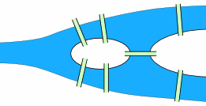
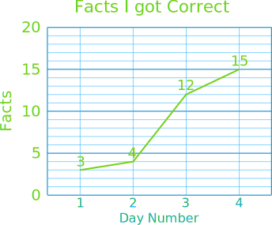
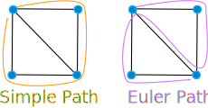
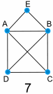
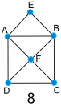

Activity: The Seven Bridges of Königsberg
The old town of Königsberg has seven bridges:

Can you take a walk through the town, visiting each part of the
town
and crossing each bridge only once?
This question was given to a famous mathematician called Leonhard Euler... but let's try to answer it ourselves!
And along the way we will learn a little about "Graph Theory".
Simplifying It
We can simplify the map above to just this:

There are four areas of the town - on the mainland north of the river, on the mainland south of the river, on the island and on the peninsula (the piece of land on the right)
Let us label them A, B, C and D:
|
To "visit each part of the town" you should visit the points A, B, C and D. And you should cross each bridge p, q, r, s, t, u and v just once. |
 |
And we can further simplify it to this:

So instead of taking long walks through the town,
you can now just draw lines with a pencil.
Your Turn
Can you draw each line p, q, r, s, t, u and v only once, without removing your pencil from the paper (you may start at any point) ?
Have a try and see if you can.
...
Did you succeed?
Well ... let's take a step back and try some simpler shapes.
Try these (remember: draw all the lines, but never go over any line more than once, and don't remove your pencil from the paper.)

Put your results here:
| Shape | Success? |
| 1 | Yes |
| 2 | |
| 3 | |
| 4 | |
| 5 | |
| 6 | |
| 7 | |
| 8 |
So, How Can We Know Which Ones Work and Which Ones Do Not?
Let's investigate!
But first, time to learn some special words:
|
 |
|
Yes, it is called a "Graph"... but it is NOT this kind of graph: They are both called "graphs". |
 |
|
|
 |
Examples:
|  |  | |
|
Diagram 7 has
|
Diagram 8 has
|
Euler Path
OK, imagine the lines are bridges. If you cross them once only you have solved the puzzle, so ...
... what we want is an "Euler Path" ...
... and here is a clue to help you: we can tell which graphs have an "Euler Path" by counting how many vertices have an odd degree.
So, fill out this table:
| Shape | Euler Path? | Vertices | how many with even degree | how many with odd degree |
| 1 | Yes | 4 | 4 | 0 |
| 2 | ||||
| 3 | ||||
| 4 | ||||
| 5 | ||||
| 6 | ||||
| 7 | ||||
| 8 |
Is there a pattern?
Don't read any further until you have found some kind of pattern ... the answer is in the table.
OK ... the answer is ...
The number of vertices of odd degree must be either zero or two.
If not then there is no "Euler Path"
And if there are two vertices with odd degree, then they are the starting and ending vertices.
And the reason is not hard to understand.
A path leads into a vertex by one edge and out by a second edge.
So the edges should come in pairs (an even number).
Only the start and end point can have an odd degree.
Now Back to the Königsberg Bridge Question:
Vertices A, B and D have degree 3 and vertex C has degree 5, so this
graph has four vertices of odd degree. So it does not have an Euler Path.
We have solved the Königsberg
bridge question just like Euler did nearly 300 years ago!
Bonus Exercise: Which of the following graphs have Euler Paths?

| Shape | Euler Path? | Vertices | How many with even degree | How many with odd degree |
| 9 | ||||
| 10 | ||||
| 11 | ||||
| 12 | ||||
| 13 | ||||
| 14 |
Footnotes
Leonhard Euler (1707 - 1783), a Swiss mathematician, was one of the greatest and most prolific mathematicians of all time. Euler spent much of his working life at the Berlin Academy in Germany, and it was during that time that he was given the "The Seven Bridges of Königsberg" question to solve that has become famous.
The town of Königsberg straddles the Pregel River. It was formerly in Prussia, but is now known as Kaliningrad and is in Russia. Königsberg was situated close to the mouth of the river and had seven bridges joining the two sides of the river and also an island and a peninsula.
Answer to the diagrams table:
| Shape | Success? | evens | odds |
| 1 | Yes | 4 | 0 |
| 2 | Yes | 2 | 2 |
| 3 | NO | 0 | 4 |
| 4 | NO | 1 | 4 |
| 5 | Yes | 2 | 2 |
| 6 | Yes | 3 | 2 |
| 7 | Yes | 3 | 2 |
| 8 | Yes | 4 | 2 |